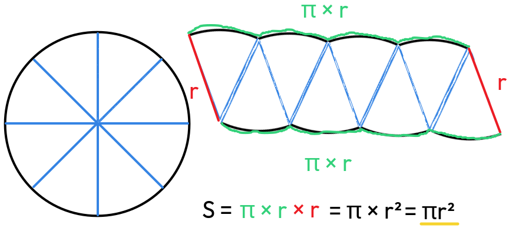

Kružnice je množina bodů ve stejné vzdálenosti od středu, zatímco kruh zahrnuje i vnitřek této kružnice. Důležitými pojmy jsou poloměr, průměr a obvod. Kruhy se využívají v geometrii i technických oborech. Výpočty souvisejí s číslem π (pí).

Má společné 2 body.

Má společný 1 bod.

Nemá společné body.

Je úsečka spojující 2 body kružnice.

Dá se díky ní dopočítat poloměr, vzdálenost od středu, nebo polovinu délky tětivy pomocí Pythagorovy věty.
Středná - úsečka mezi dvěma středy kružnic
|S₁S₂| ≠ 0 mm
|S₁S₂| > r₁ + r₂

|S₁S₂| < r₁ + r₂

vnitřní dotyk - kružnice jsou v sobě
|S₁S₂| = r₁ - r₂
|S₁S₂| ≠ 0 mm

vnější dotyk - kružnice jsou vedle sebe
|S₁S₂| = r₁ + r₂
|S₁S₂| ≠ 0 mm

|S₁S₂| < r₁ + r₂
|S₁S₂| ≠ 0 mm
Thaletova kružnice je kružnice, která prochází středy stran pravoúhlého trojúhelníku.


obvod kruhu: 5 cm
průměr kruhu: 1,59 cm
když vynásobíme průměr s π (pi), výjde nám obvod

*zaokrouhlíme
Číslo pi je nekonečné, ale neopakuje se (0,333333...), má hodnotu příbližně 3,14....
Krybychom rozdělili kruh na ∞ částí, vznikl by po součnu obdélník (strana krát strana).
Vzorec: S = πr²